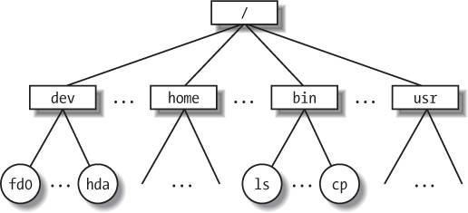

{% include JB/setup %}
{% raw %}
<div>


<a name="understandlk-CHP-1-SECT-5"></a>
<h3 class="docSection1Title" id="534869-944">1.5. An Overview of the Unix Filesystem</h3><a name="IDX-CHP-1-0170"></a>
<p class="docText1">The Unix operating system design is centered on its filesystem, which has several interesting characteristics. We'll review the most significant ones, since they will be mentioned quite often in forthcoming chapters.</p>
<a name="understandlk-CHP-1-SECT-5.1"></a>
<h4 class="docSection2Title">1.5.1. Files</h4>
<p class="docText1">A Unix file is an information container structured as a sequence of bytes; the kernel does not interpret the contents of a file. Many programming libraries implement higher-level abstractions, such as records structured into fields and record addressing based on keys. However, the programs in these libraries must rely on system calls offered by the kernel. From the user's point of view, files<a name="IDX-CHP-1-0171"></a> 
 are organized in a tree-structured namespace, as shown in <a class="pcalibre5 docLink pcalibre1" href="#understandlk-CHP-1-FIG-1">Figure 1-1</a>.</p>
<a name="understandlk-CHP-1-FIG-1"></a><p class="calibre14"><center class="calibre8">
<h5 class="docFigureTitle">Figure 1-1. An example of a directory tree</h5>
</center></p><br class="calibre7"/>
<p class="docText1">All the nodes of the tree, except the leaves, denote directory names. A directory node contains information about the files and directories just beneath it. A file or directory name consists of a sequence of arbitrary ASCII characters,<sup class="docFootnote"><a class="pcalibre5 docLink pcalibre1" href="#understandlk-CHP-1-FN7">[*]</a></sup> with the exception of / and of the null character \0. Most filesystems place a limit on the length of a filename, typically no more than 255 characters. The directory corresponding to the root of the tree is called the <span class="docEmphasis">root directory</span>. By convention, its name is a slash (<tt class="calibre25">/</tt>). Names must be different within the same directory, but the same name may be used in different directories.</p><blockquote class="calibre22"><p class="docFootnote1"><sup class="calibre24"><a name="understandlk-CHP-1-FN7">[*]</a></sup> Some operating systems allow filenames<a name="IDX-CHP-1-0172"></a> 
 to be expressed in many different alphabets, based on 16-bit extended coding of graphical characters such as Unicode.</p></blockquote>
<p class="docText1">Unix associates a <span class="docEmphasis">current working directory</span><a name="IDX-CHP-1-0173"></a> 
 with each process (see the section "<a class="pcalibre5 docLink pcalibre1" href="understandlk-CHP-1-SECT-6.html#understandlk-CHP-1-SECT-6.1">The Process/Kernel Model</a>" later in this chapter); it belongs to the process execution context, and it identifies the directory currently used by the process. To identify a specific file, the process uses a <span class="docEmphasis">pathname</span>, which consists of slashes alternating with a sequence of directory names that lead to the file. If the first item in the pathname is a slash, the pathname is said to be <span class="docEmphasis">absolute</span>, because its starting point is the root directory. Otherwise, if the first item is a directory name or filename, the pathname is said to be <span class="docEmphasis">relative</span>, because its starting point is the process's current directory.</p>
<p class="docText1">While specifying filenames, the notations "." and ".." are also used. They denote the current working directory and its parent directory, respectively. If the current working directory is the root directory, "." and ".." coincide.</p>
<a name="understandlk-CHP-1-SECT-5.2"></a>
<h4 class="docSection2Title">1.5.2. Hard and Soft Links</h4><a name="IDX-CHP-1-0174"></a>
<a name="IDX-CHP-1-0175"></a>
<a name="IDX-CHP-1-0176"></a>
<a name="IDX-CHP-1-0177"></a>
<p class="docText1">A filename included in a directory is called a file <span class="docEmphasis">hard link</span>, or more simply, a <span class="docEmphasis">link</span>. The same file may have several links included in the same directory or in different ones, so it may have several filenames.</p>
<p class="docText1">The Unix command:</p>
<pre class="calibre27">
    $ ln p1 p2</pre><br class="calibre7"/>
<p class="docText1">is used to create a new hard link that has the pathname <tt class="calibre25">p2</tt> for a file identified by the pathname <tt class="calibre25">p1</tt>.</p>
<p class="docText1">Hard links have two limitations:</p>
<ul class="calibre11"><li class="calibre12"><p class="docText1">It is not possible to create hard links<a name="IDX-CHP-1-0178"></a> 
 for directories. Doing so might transform the directory tree into a graph with cycles, thus making it impossible to locate a file according to its name.</p></li><li class="calibre12"><p class="docText1">Links can be created only among files included in the same filesystem. This is a serious limitation, because modern Unix systems may include several filesystems located on different disks and/or partitions, and users may be unaware of the physical divisions between them.</p></li></ul>
<p class="docText1">To overcome these limitations, <span class="docEmphasis">soft links</span><a name="IDX-CHP-1-0179"></a> 
 (also called <span class="docEmphasis">symbolic links</span>) were introduced a long time ago. Symbolic links are short files that contain an arbitrary pathname of another file. The pathname may refer to any file or directory located in any filesystem; it may even refer to a nonexistent file.</p>
<p class="docText1">The Unix command:</p>
<pre class="calibre27">
    $ ln -s p1 p2</pre><br class="calibre7"/>
<p class="docText1">creates a new soft link with pathname <tt class="calibre25">p2</tt> that refers to pathname <tt class="calibre25">p1</tt>. When this command is executed, the filesystem extracts the directory part of <tt class="calibre25">p2</tt> and creates a new entry in that directory of type symbolic link, with the name indicated by <tt class="calibre25">p2</tt>. This new file contains the name indicated by pathname <tt class="calibre25">p1</tt>. This way, each reference to <tt class="calibre25">p2</tt> can be translated automatically into a reference to <tt class="calibre25">p1</tt>.</p>
<a name="understandlk-CHP-1-SECT-5.3"></a>
<h4 class="docSection2Title">1.5.3. File Types</h4><a name="IDX-CHP-1-0180"></a>
<p class="docText1">Unix files may have one of the following types:</p>
<ul class="calibre11"><li class="calibre12"><p class="docText1">Regular file</p></li><li class="calibre12"><p class="docText1">Directory</p></li><li class="calibre12"><p class="docText1">Symbolic link</p></li><li class="calibre12"><p class="docText1">Block-oriented device file</p></li><li class="calibre12"><p class="docText1">Character-oriented device file</p></li><li class="calibre12"><p class="docText1">Pipe and named pipe (also called FIFO)</p></li><li class="calibre12"><p class="docText1">Socket</p></li></ul>
<p class="docText1">The first three file types are constituents of any Unix filesystem. Their implementation is described in detail in <a class="pcalibre5 docLink pcalibre1" href="understandlk-CHP-18.html#understandlk-CHP-18">Chapter 18</a>.</p>
<p class="docText1">Device files are related both to I/O devices, and to device drivers integrated into the kernel. For example, when a program accesses a device file, it acts directly on the I/O device associated with that file (see <a class="pcalibre5 docLink pcalibre1" href="understandlk-CHP-13.html#understandlk-CHP-13">Chapter 13</a>).</p>
<p class="docText1">Pipes and sockets are special files used for interprocess communication (see the section "<a class="pcalibre5 docLink pcalibre1" href="understandlk-CHP-1-SECT-6.html#understandlk-CHP-1-SECT-6.5">Synchronization and Critical Regions</a>" later in this chapter; also see <a class="pcalibre5 docLink pcalibre1" href="understandlk-CHP-19.html#understandlk-CHP-19">Chapter 19</a>).</p>
<a name="understandlk-CHP-1-SECT-5.4"></a>
<h4 class="docSection2Title">1.5.4. File Descriptor and Inode</h4><a name="IDX-CHP-1-0181"></a>
<a name="IDX-CHP-1-0182"></a>
<a name="IDX-CHP-1-0183"></a>
<a name="IDX-CHP-1-0184"></a>
<a name="IDX-CHP-1-0185"></a>
<p class="docText1">Unix makes a clear distinction between the contents of a file and the information about a file. With the exception of device files and files of special filesystems, each file consists of a sequence of bytes. The file does not include any control information, such as its length or an end-of-file (EOF) delimiter.</p>
<p class="docText1">All information needed by the filesystem to handle a file is included in a data structure called an <span class="docEmphasis">inode</span>. Each file has its own inode, which the filesystem uses to identify the file.</p>
<p class="docText1">While filesystems and the kernel functions handling them can vary widely from one Unix system to another, they must always provide at least the following attributes, which are specified in the POSIX standard:</p>
<ul class="calibre11"><li class="calibre12"><p class="docText1">File type (see the previous section)</p></li><li class="calibre12"><p class="docText1">Number of hard links associated with the file</p></li><li class="calibre12"><p class="docText1">File length in bytes</p></li><li class="calibre12"><p class="docText1">Device ID (i.e., an identifier of the device containing the file)</p></li><li class="calibre12"><p class="docText1">Inode number that identifies the file within the filesystem</p></li><li class="calibre12"><p class="docText1">UID<a name="IDX-CHP-1-0186"></a> 
 of the file owner</p></li><li class="calibre12"><p class="docText1">User group ID of the file</p></li><li class="calibre12"><p class="docText1">Several timestamps that specify the inode status change time, the last access time, and the last modify time</p></li><li class="calibre12"><p class="docText1"><a class="pcalibre5 docLink pcalibre1" href="#understandlk-CHP-1-SECT-5.5">Access rights and file mode</a> (see the next section)</p></li></ul>
<a name="understandlk-CHP-1-SECT-5.5"></a>
<h4 class="docSection2Title">1.5.5. Access Rights and File Mode</h4>
<p class="docText1">The potential users of a file fall into three classes:</p>
<ul class="calibre11"><li class="calibre12"><p class="docText1">The user who is the owner of the file</p></li><li class="calibre12"><p class="docText1">The users who belong to the same group as the file, not including the owner</p></li><li class="calibre12"><p class="docText1">All remaining users (others)</p></li></ul>
<p class="docText1">There are three types of access rights <span class="docEmphasis">-- read</span>, <span class="docEmphasis">write</span>, and <span class="docEmphasis">execute</span>  for each of these three classes. Thus, the set of access rights associated with a file consists of nine different binary flags. Three additional flags, called <span class="docEmphasis">suid</span> (<span class="docEmphasis">Set User ID</span>), <span class="docEmphasis">sgid</span> (<span class="docEmphasis">Set Group ID</span>), and <span class="docEmphasis">sticky</span>, define the file mode. These flags have the following meanings when applied to executable files:</p>
<a name="IDX-CHP-1-0187"></a><a name="IDX-CHP-1-0188"></a><dl class="docText1"><dt class="calibre7"><br class="calibre7"/><p class="calibre14"><span class="docPubcolor"><span class="docPubcolor"><span class="docMonofont">suid</span></span></span></p></dt>
<dd class="calibre20"><p class="docList">A process executing a file normally keeps the User ID (UID<a name="IDX-CHP-1-0187"></a> 
) of the process owner. However, if the executable file has the <tt class="calibre25">suid</tt> flag set, the process gets the UID of the file owner.</p></dd><dt class="calibre7"><br class="calibre7"/><p class="calibre14"><span class="docPubcolor"><span class="docPubcolor"><span class="docMonofont">sgid</span></span></span></p></dt>
<dd class="calibre20"><p class="docList">A process executing a file keeps the user group ID<a name="IDX-CHP-1-0188"></a> 
 of the process group. However, if the executable file has the <tt class="calibre25">sgid</tt> flag set, the process gets the user group ID of the file.</p></dd><dt class="calibre7"><br class="calibre7"/><p class="calibre14"><span class="docPubcolor"><span class="docPubcolor"><span class="docMonofont">sticky</span></span></span></p></dt>
<dd class="calibre20"><p class="docList">An executable file with the <tt class="calibre25">sticky</tt> flag set corresponds to a request to the kernel to keep the program in memory after its execution terminates.<sup class="docFootnote"><a class="pcalibre5 docLink pcalibre1" href="#understandlk-CHP-1-FN8">[*]</a></sup></p><blockquote class="calibre22"><p class="docFootnote2"><sup class="calibre24"><a name="understandlk-CHP-1-FN8">[*]</a></sup> This flag has become obsolete; other approaches based on sharing of code pages are now used (see <a class="pcalibre5 docLink pcalibre1" href="understandlk-CHP-9.html#understandlk-CHP-9">Chapter 9</a>).</p></blockquote></dd></dl>
<p class="docText1">When a file is created by a process, its owner ID is the UID of the process. Its owner user group ID can be either the process group ID of the creator process or the user group ID of the parent directory, depending on the value of the <tt class="calibre25">sgid</tt> flag of the parent directory.</p>
<a name="understandlk-CHP-1-SECT-5.6"></a>
<h4 class="docSection2Title">1.5.6. File-Handling System Calls</h4><a name="IDX-CHP-1-0189"></a>
<a name="IDX-CHP-1-0190"></a>
<a name="IDX-CHP-1-0191"></a>
<a name="IDX-CHP-1-0192"></a>
<a name="IDX-CHP-1-0193"></a>
<a name="IDX-CHP-1-0194"></a>
<a name="IDX-CHP-1-0195"></a>
<a name="IDX-CHP-1-0196"></a>
<p class="docText1">When a user accesses the contents of either a regular file or a directory, he actually accesses some data stored in a hardware block device. In this sense, a filesystem is a user-level view of the physical organization of a hard disk partition. Because a process in User Mode cannot directly interact with the low-level hardware components, each actual file operation must be performed in Kernel Mode. Therefore, the Unix operating system defines several system calls related to file handling.</p>
<p class="docText1">All Unix kernels devote great attention to the efficient handling of hardware block devices to achieve good overall system performance. In the chapters that follow, we will describe topics related to file handling in Linux and specifically how the kernel reacts to file-related system calls. To understand those descriptions, you will need to know how the main file-handling system calls are used; these are described in the next section.</p>
<a name="understandlk-CHP-1-SECT-5.6.1"></a>
<h5 class="docSection3Title">1.5.6.1. Opening a file</h5>
<p class="docText1">Processes can access only "opened" files. To open a file, the process invokes the system call:</p>
<pre class="calibre27">
    fd = open(path, flag, mode)</pre><br class="calibre7"/>
<p class="docText1">The three parameters have the following meanings:</p>
<dl class="docText1"><dt class="calibre7"><br class="calibre7"/><p class="calibre14"><span class="docPubcolor"><span class="docPubcolor"><span class="docMonofont">path</span></span></span></p></dt>
<dd class="calibre20"><p class="docList">Denotes the pathname (relative or absolute) of the file to be opened.</p></dd><dt class="calibre7"><br class="calibre7"/><p class="calibre14"><span class="docPubcolor"><span class="docPubcolor"><span class="docMonofont">flag</span></span></span></p></dt>
<dd class="calibre20"><p class="docList">Specifies how the file must be opened (e.g., read, write, read/write, append). It also can specify whether a nonexisting file should be created.</p></dd><dt class="calibre7"><br class="calibre7"/><p class="calibre14"><span class="docPubcolor"><span class="docPubcolor"><span class="docMonofont">mode</span></span></span></p></dt>
<dd class="calibre20"><p class="docList">Specifies the access rights of a newly created file.</p></dd></dl>
<p class="docText1">This system call creates an "open file" object and returns an identifier called a <span class="docEmphasis">file descriptor</span>. An open file object contains:</p>
<ul class="calibre11"><li class="calibre12"><p class="docText1">Some file-handling data structures, such as a set of flags specifying how the file has been opened, an <tt class="calibre25">offset</tt> field that denotes the current position in the file from which the next operation will take place (the so-called <span class="docEmphasis">file pointer</span>), and so on.</p></li><li class="calibre12"><p class="docText1">Some pointers to kernel functions that the process can invoke. The set of permitted functions depends on the value of the <tt class="calibre25">flag</tt> parameter.</p></li></ul>
<p class="docText1">We discuss open file objects in detail in <a class="pcalibre5 docLink pcalibre1" href="understandlk-CHP-12.html#understandlk-CHP-12">Chapter 12</a>. Let's limit ourselves here to describing some general properties specified by the POSIX semantics.</p>
<ul class="calibre11"><li class="calibre12"><p class="docText1">A file descriptor represents an interaction between a process and an opened file, while an open file object contains data related to that interaction. The same open file object may be identified by several file descriptors<a name="IDX-CHP-1-0197"></a> 
 in the same process.</p></li><li class="calibre12"><p class="docText1">Several processes may concurrently open the same file. In this case, the filesystem assigns a separate file descriptor to each file, along with a separate open file object. When this occurs, the Unix filesystem does not provide any kind of synchronization among the I/O operations issued by the processes on the same file. However, several system calls such as <tt class="calibre25">flock( )</tt> are available to allow processes to synchronize themselves on the entire file or on portions of it (see <a class="pcalibre5 docLink pcalibre1" href="understandlk-CHP-12.html#understandlk-CHP-12">Chapter 12</a>).</p></li></ul>
<p class="docText1">To create a new file, the process also may invoke the <tt class="calibre25">creat( )</tt> system call, which is handled by the kernel exactly like <tt class="calibre25">open( )</tt>.</p>
<a name="understandlk-CHP-1-SECT-5.6.2"></a>
<h5 class="docSection3Title">1.5.6.2. Accessing an opened file</h5><a name="IDX-CHP-1-0198"></a>
<a name="IDX-CHP-1-0199"></a>
<a name="IDX-CHP-1-0200"></a>
<a name="IDX-CHP-1-0201"></a>
<p class="docText1">Regular Unix files can be addressed either sequentially or randomly, while device files and named pipes are usually accessed sequentially. In both kinds of access, the kernel stores the file pointer in the open file object  that is, the current position at which the next read or write operation will take place.</p>
<p class="docText1">Sequential access is implicitly assumed: the <tt class="calibre25">read( )</tt> and <tt class="calibre25">write( )</tt><a name="IDX-CHP-1-0202"></a> 
 system calls always refer to the position of the current file pointer. To modify the value, a program must explicitly invoke the <tt class="calibre25">lseek( )</tt><a name="IDX-CHP-1-0203"></a> 
 system call. When a file is opened, the kernel sets the file pointer to the position of the first byte in the file (offset 0).</p>
<p class="docText1">The <tt class="calibre25">lseek( )</tt> system call requires the following parameters:</p>
<pre class="calibre27">
    newoffset = lseek(fd, offset, whence);</pre><br class="calibre7"/>
<p class="docText1">which have the following meanings:</p>
<dl class="docText1"><dt class="calibre7"><br class="calibre7"/><p class="calibre14"><span class="docPubcolor"><span class="docPubcolor"><span class="docMonofont">fd</span></span></span></p></dt>
<dd class="calibre20"><p class="docList">Indicates the file descriptor of the opened file</p></dd><dt class="calibre7"><br class="calibre7"/><p class="calibre14"><span class="docPubcolor"><span class="docPubcolor"><span class="docMonofont">offset</span></span></span></p></dt>
<dd class="calibre20"><p class="docList">Specifies a signed integer value that will be used for computing the new position of the file pointer</p></dd><dt class="calibre7"><br class="calibre7"/><p class="calibre14"><span class="docPubcolor"><span class="docPubcolor"><span class="docMonofont">whence</span></span></span></p></dt>
<dd class="calibre20"><p class="docList">Specifies whether the new position should be computed by adding the <tt class="calibre25">offset</tt> value to the number 0 (offset from the beginning of the file), the current file pointer, or the position of the last byte (offset from the end of the file)</p></dd></dl>
<p class="docText1">The <tt class="calibre25">read( )</tt><a name="IDX-CHP-1-0204"></a> 
 system call requires the following parameters:</p>
<pre class="calibre27">nread = read(fd, buf, count);</pre><br class="calibre7"/>
<p class="docText1">which have the following meanings:</p>
<dl class="docText1"><dt class="calibre7"><br class="calibre7"/><p class="calibre14"><span class="docPubcolor"><span class="docPubcolor"><span class="docMonofont">fd</span></span></span></p></dt>
<dd class="calibre20"><p class="docList">Indicates the file descriptor of the opened file</p></dd><dt class="calibre7"><br class="calibre7"/><p class="calibre14"><span class="docPubcolor"><span class="docPubcolor"><span class="docMonofont">buf</span></span></span></p></dt>
<dd class="calibre20"><p class="docList">Specifies the address of the buffer in the process's address space to which the data will be transferred</p></dd><dt class="calibre7"><br class="calibre7"/><p class="calibre14"><span class="docPubcolor"><span class="docPubcolor"><span class="docMonofont">count</span></span></span></p></dt>
<dd class="calibre20"><p class="docList">Denotes the number of bytes to read</p></dd></dl>
<p class="docText1">When handling such a system call, the kernel attempts to read <tt class="calibre25">count</tt> bytes from the file having the file descriptor <tt class="calibre25">fd</tt>, starting from the current value of the opened file's offset field. In some casesend-of-file, empty pipe, and so onthe kernel does not succeed in reading all <tt class="calibre25">count</tt> bytes. The returned <tt class="calibre25">nread</tt> value specifies the number of bytes effectively read. The file pointer also is updated by adding <tt class="calibre25">nread</tt> to its previous value. The <tt class="calibre25">write( )</tt> parameters are similar.</p>
<a name="understandlk-CHP-1-SECT-5.6.3"></a>
<h5 class="docSection3Title">1.5.6.3. Closing a file</h5><a name="IDX-CHP-1-0205"></a>
<a name="IDX-CHP-1-0206"></a>
<p class="docText1">When a process does not need to access the contents of a file anymore, it can invoke the system call:</p>
<pre class="calibre27">
    res = close(fd);</pre><br class="calibre7"/>
<p class="docText1">which releases the open file object corresponding to the file descriptor <tt class="calibre25">fd</tt>. When a process terminates, the kernel closes all its remaining opened files.</p>
<a name="understandlk-CHP-1-SECT-5.6.4"></a>
<h5 class="docSection3Title">1.5.6.4. Renaming and deleting a file</h5>
<p class="docText1">To rename or delete a file, a process does not need to open it. Indeed, such operations do not act on the contents of the affected file, but rather on the contents of one or more directories. For example, the system call:</p>
<pre class="calibre27">
    res = rename(oldpath, newpath);</pre><br class="calibre7"/>
<p class="docText1">changes the name of a file link, while the system call:</p>
<pre class="calibre27">
    res = unlink(pathname);</pre><br class="calibre7"/>
<p class="docText1">decreases the file link count and removes the corresponding directory entry. The file is deleted only when the link count assumes the value 0.</p>

<br class="calibre7"/>

</div>

{% endraw %}

